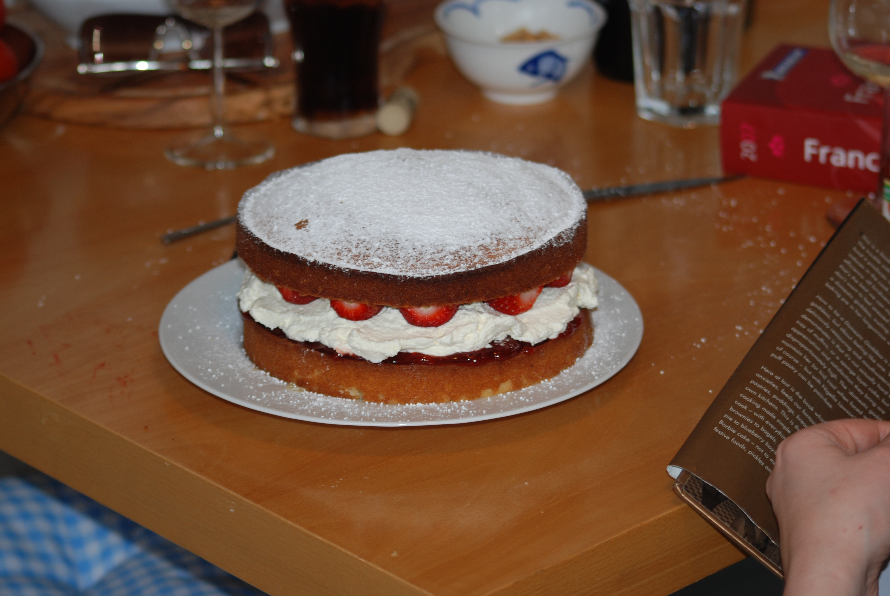

Whole eggs beaten with sugar until pale and tripled in volume (ribbon stage). Flour folded in gently — no fat, no leavening agent. Lift comes entirely from trapped air. Light, dry texture ideal for layered cakes soaked with simple syrup. Base of bûche de Noël and Swiss roll.
Similar to sponge but with melted butter folded in last, adding richness and moisture. Eggs and sugar are warmed over a bain-marie before whipping, helping achieve greater volume. The butter must be cooled and folded quickly to avoid deflating the foam.
Originally one pound each of flour, butter, eggs, and sugar. The creaming method traps air in the fat-sugar matrix. Dense, rich, buttery crumb. Modern recipes adjust ratios and add baking powder for more lift. Lemon or vanilla flavoring is classic. Excellent toasted.
Uses only egg whites, beaten to stiff peaks, with no fat at all. Cream of tartar stabilizes the meringue. Cake flour (lower protein) keeps texture delicate. Baked in an ungreased tube pan so the batter can cling and rise — and inverted while cooling to prevent collapse.
Hybrid: uses oil (not solid fat) for moisture, plus beaten egg whites for lift. Oil doesn't solidify when cold, keeping the cake moist even from the fridge. Lighter than pound cake, richer than angel food. Invented in 1927, popularized by Betty Crocker.
Classic Southern cake with cocoa, buttermilk, and acidic vinegar. Originally the red color came from anthocyanins in natural cocoa reacting with buttermilk acid. Modern recipes add red food coloring. Cream cheese frosting is canonical. Subtle chocolate flavor with a tender crumb.
Oil-based batter keeps this cake moist for days. Grated carrots add moisture, sweetness, and texture. Spices: cinnamon, nutmeg, ginger. Walnuts or pecans for crunch. Cream cheese frosting is the classic partner — its tang cuts the sweetness. Can include pineapple for additional moisture.